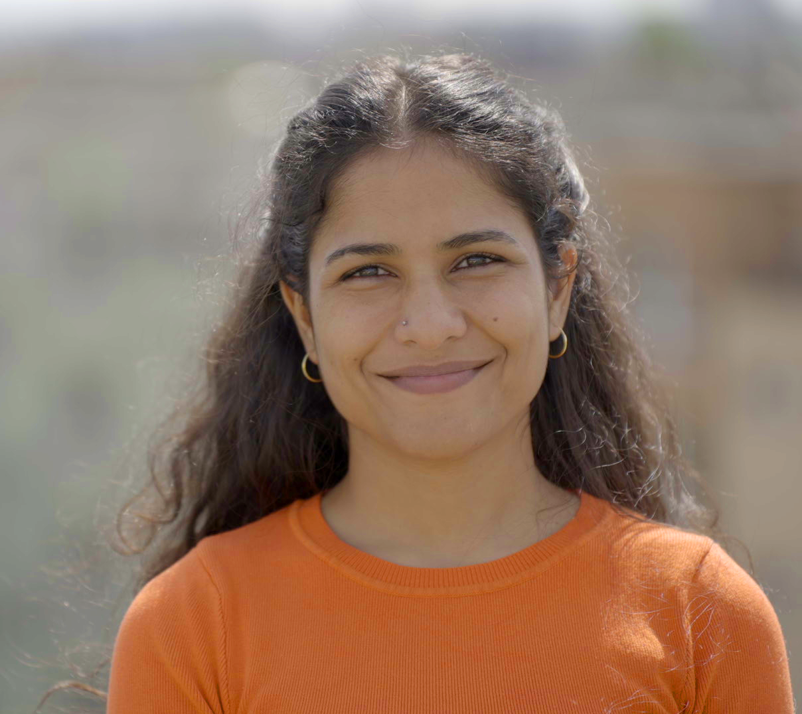

About Me
I'm a postdoctoral researcher and a Leon Levy Scholar in the Schaffer Lab at the Icahn School of Medicine at Mount Sinai. My current research focuses on the problem of credit assignment in biological neural networks: how do individual neurons and synapses determine their contributions to behavioral outcomes, and how might different neuromodulatory systems facilitate this process? I use recurrent neural network models to investigate biologically plausible learning mechanisms and explore how network architecture and neuronal diversity influence learning. Download CV
Research Interests
I am interested in understanding how neural circuits process information, learn from experience, and adapt to changing environments. My research is motivated by several interconnected questions: How do recurrent neural circuits assign credit and propagate learning signals in the absence of conventional backpropagation? How do they balance the stability of existing representations with the flexibility required to learn from new experiences? And how do changes in circuit function, whether driven by aging or social experience, reshape learning and behavior? My research lies at the intersection of computational neuroscience, dynamical systems, machine learning, and theoretical approaches to understanding neural computation.
News
- 2026 Began mentoring Sarah Beresford through the Shenoy Undergraduate Research Fellowship in Neuroscience (SURFiN), on a project investigating the role of neuromodulators in credit assignment.
- 2026 Awarded the Leon Levy Scholarship in Neuroscience (2026–2029).
- 2026 Invited talk at the Neuroscience and ML Workshop, University of Chicago.
- 2025 Attended and gave a talk at the Junior Scientist Workshop on Theoretical Neuroscience, HHMI Janelia Research Campus.